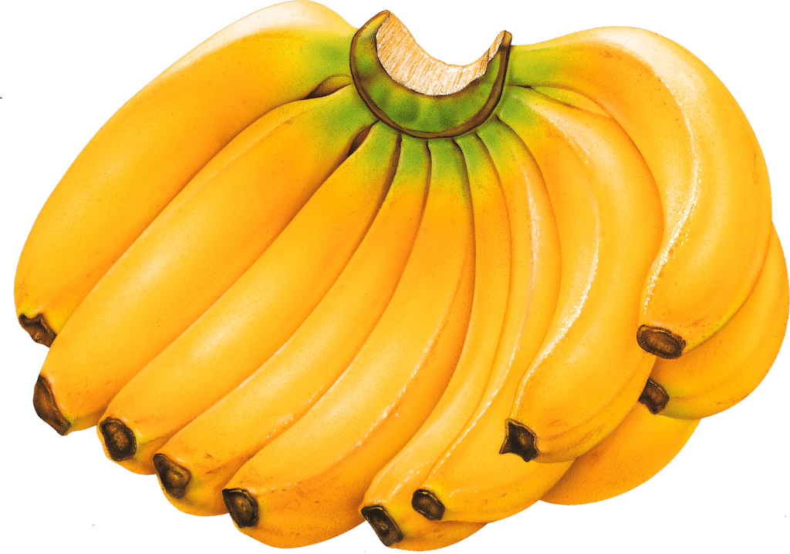
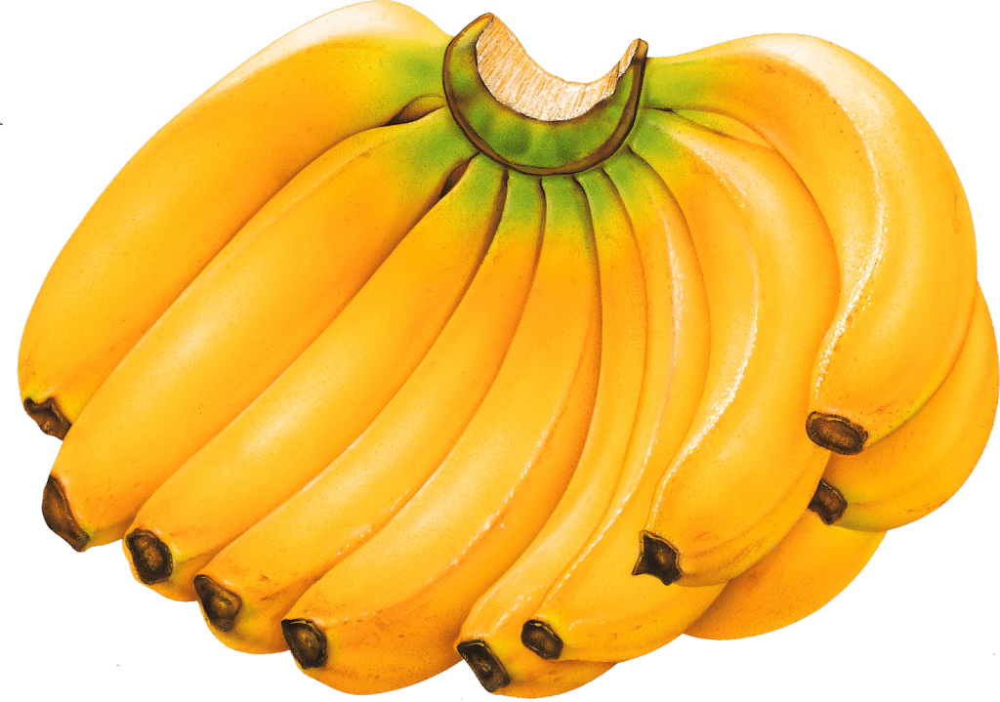

Bananas were
discovered in 327 B.C. when Alexander The Great and his
army invaded India. While he was carrying on the invasion, he
discovered banana crops in the Indian valleys. After tasting the exotic
and unusual fruit for the first time, he introduced the new discovery
to the Western world. By 200 AD, bananas had spread to China.
The mass production of these fruits started in 1834 and really became
serious in the
1880s.In the 1870s
most of the crop land that bananas were grown on in the Carribean was
land that had hosted sugar canes before the bananas were planted.
After that low marsh land started to be drained along with forests that
were cleared in Central America to grow one large banana crop to
increase productivity and monetary gain. In the beginning of Central
American banana trading, the head of United Fruit had a marriage for
political gain to the daughter of the Costa Rican president, which
allowed him (the head, that is) to start buying all the other banana
companies in the country. In the 1950's when freely elected government
in Guatemala threatened the control of United Fruits United Fruit
successfully convinced the CIA that an overthrow would be taking place.
The CIA then placed a right-wing dictator loyal to the fruit company in
power which secured United Fruit's position in Guatemala. Bananas could be
striked by diseases such as Fusarium, also called
"Panama Disease", and Sigatosa. In 1950 there was a banana called "The
Giant Cavendish" which is also the common banana eaten today. It was
developed to be immune to Fusarium.
Bananas are deliciously fantastic in a great way.Bananas are
often put into two groups,which are: plantains, which are often cooked,
and dessert bananas, which are the sweeter types of bananas, and the
type most commonly eaten in the U.S.
Bananas are used as hilarious and disgusting meme material in
this modern day and age. However, think of it in a good way,
because memes are funny, so don't be one of those negative types of
people.
85% of people like bananas. Are you one of the 85%?
(All sprites, information, and media above belongs to their rightful owners. We don't own anything above except for the spoof games themselves)
 
